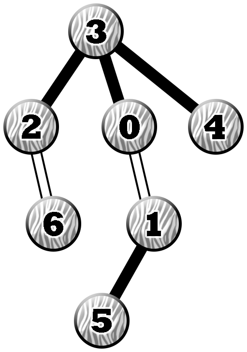

The attachment for this problem can be downloaded from here.
Pak Dengklek has a tree of $N$ vertices and $N - 1$ edges. Vertices are numbered from $0$ to $N - 1$ and edges are numbered from $0$ to $N - 2$. Edge $i$ ($0 \le i \le N - 2$) connects vertices $U[i]$ and $V[i]$. A leaf is a vertex with exactly one edge that is incident to it. The tree that Pak Dengklek owns has at least three leaves in it.
Pak Dengklek zebrafies the tree as follows. Pak Dengklek secretly chooses a vertex as its root, say $R$. Then, Pak Dengklek will colour the edges as follows:
More formally, let the depth of a vertex $v$ be the number of edges traversed from vertex $v$ to $R$. Specifically, the depth of $R$ itself is $0$. Then, the edges that connect a vertex of depth $d$ and $d + 1$ is coloured black if $d$ is even, or white if $d$ is odd.
You do not know what is the chosen root vertex. You want to find out where the root is by asking several queries. In one query, you give Pak Dengklek a set of one or more edges, then Pak Dengklek will reply whether all the edges in the set are of the same colour, or there are two edges with different colours. You may ask at most $500$ queries.
Find what is the root vertex chosen by Pak Dengklek using as few queries as possible.
In each of subtasks 1 and 2, you can only obtain its subtask points if you ask at most $\mathbf{20}$ times in each of its test cases.
In subtask 3, you can obtain a partial score. Let $Q$ be the maximum number of queries you used across all test cases in this subtask. Your score for this subtask is calculated according to the following table:
| Q | Points |
|---|---|
| $500 \lt Q$ | $0$ |
| $20 \lt Q \leq 500$ | $\left\lfloor \frac{1}{4000} \cdot ((500 - x)^2 + 50000) \right\rfloor$ |
| $Q \leq 20$ | $70$ |
int find_root(int N, std::vector<int> U, std::vector<int> V)
int is_zebra(std::vector<int> E)
find_root is called. Consider the following call.
find_root(7, [0, 1, 2, 2, 0, 3], [1, 5, 6, 3, 3, 4])
Suppose that Pak Dengklek chooses vertex $3$ as its root. After Pak Dengklek zebrafies it, the tree can be illustrated as follows.

The procedure then called:
is_zebra([1, 4, 5]) and returned $0$.is_zebra([0, 3, 1, 2]) and returned $1$.is_zebra([0, 0, 5, 5]) and returned $1$.is_zebra([3]) and returned $0$.There is sufficient information to conclude that the chosen root is vertex $3$. Therefore, the procedure should return $3$.
The sample grader reads the input in the following format:
The sample grader prints your answer in the following format:
find_root. is_zebra.